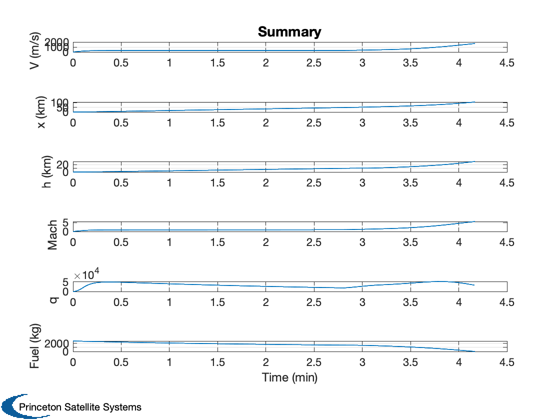
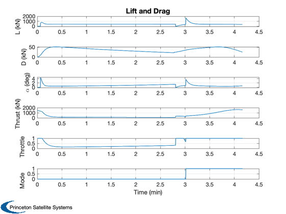
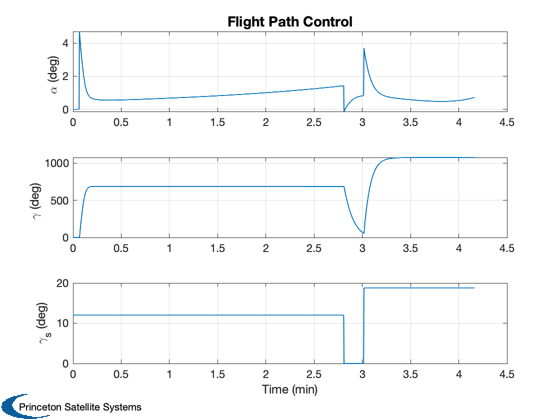
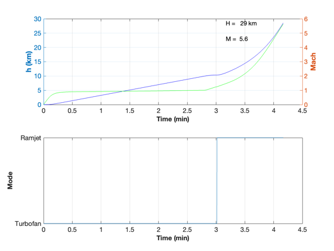

Contents
TSTO takeoff demo.
The TSTO stack starts on the runway in takeoff mode. When it is moving at the takeoff speed it climbs. It transitions from turbojet to ramjet and climbs to the separation altitude and velocity.
The simulation works with flight path and heading angles. You can try flying the vehicle in a variety of trajectories.
The vehicle parameters are documented in the paper:
Paluszek, M. and J. Mueller, Space Rapid Transit - A Two Stage to Orbit Fully Reusable Launch Vehicle, IAC-14,C4,6.2, Toronto, Ontario Canada, October 2014.
The parameters are for a small two stage to orbit vehicle.
The Orbiter starts at the termination condition. The script computes a transfer orbit and the necessary velocity changes to get the Orbiter into an ISS altitude orbit. The Orbiter trajectory is not simulated.
See also RHS3DPointAircraft, LiftAndDragJonesSearsHaack, ACPointMassControl, TurboRamjet, Turbojet, TSTOFerryData, TSTOOrbiterData, BoostPhaseDeltaV, TSTODragData, TSTOFlightProfile, LaunchConstants, AERToNu, SLR, DVOrbitDrag, OrbitVel2D, StdAtm, AtmData.txt, NewFig, Plot2D, TimeLabl, XLabelS, YLabelS, RK4
%-------------------------------------------------------------------------- % Copyright (c) 2013-2015 Princeton Satellite Systems, Inc. % All rights reserved. %-------------------------------------------------------------------------- % Time step %---------- dT = 0.2; % sec tEnd = 2000; % sec n = ceil(tEnd/dT); % Constants %---------- g = 9.806; % m/sec^2 radToDeg = 180/pi; rEarth = 6378.165; % km kmToM = 1000; % m/km % Mode ids %--------- ramjet = 1; turbofan = 0; % Second stage control %--------------------- hFinal = 370; orbiterFuelMass = 22279.2; orbiterUE = 464*g/kmToM ; orbiterDryMass = 1223.2 + 221.6 + 750.9 + 1781.2 + 901.0 + 600; orbiterTotalMass = orbiterDryMass + orbiterFuelMass; bOrbiter = pi*2^2*2.7/orbiterTotalMass; % Control settings %----------------- hSeparation = 40000; % m desired p = StdAtm(hSeparation); vTakeoff = 120; gammaSetTurbofan = 12.0/radToDeg; gammaSetRamjet = 18.8/radToDeg; machTransition = 1.25; hAccel = 10000; % 10000 vClimbTurbofan = 300; vMax = 6.5*p.speedOfSound;
TSTO Aircraft model
%--------------------- % Aircraft %--------- dO = load('TSTOOrbiterData'); dF = load('TSTOFerryData'); clear d d.lDData = TSTODragData( dO, dF ); d.lDData.cL = 2*pi; d.lDData.alpha = 0; massFuel = dF.massFuel; massDry = dF.massDry; wingArea = dF.wingArea; % Lift and drag model for the Ferry stage %---------------------------------------- d.cDCL = @LiftAndDragJonesSearsHaack; cLAlpha = 2*pi; d.mass = massDry; % Dry mass of aircraft (kg) d.atmData = load('AtmData.txt'); % Turbojet engine data %--------------------- d.thrust = @TurboRamjet; d.thrustData.ramjet.cP = 1004; % Air specific heat d.thrustData.ramjet.aInlet = 1.0; % Inlet area d.thrustData.ramjet.qR = 121e6; d.thrustData.ramjet.gamma = 1.4; d.thrustData.ramjet.tT4 = 4000; d.thrustData.turbojet = Turbojet; d.thrustData.turbojet.qR = 121e6; d.thrustData.machTransition = inf;
Control system data structure
clear dC dC.gammaSet = gammaSetTurbofan; dC.bankAngle = 0; dC.vSet = vClimbTurbofan; dC.gainGamma = 0.1; dC.gainThrust = 0.2; dC.throttle = 1; dC.mode = 'takeoff'; dC.vTakeoff = vTakeoff; dC.alpha = 0; % Set the initial engine mode mode = turbofan;
Simulate
% Initial conditions %------------------- x = [0;0;0;0;0;0;massFuel]; t = (0:(n-1))*dT; xP = zeros(18,n); for k = 1:n % Altitude %--------- h = x(6); % Standard atmosphere %-------------------- p = StdAtm( h ); mach = x(1)/p.speedOfSound; % Accelerate at altitude in turbofan mode %---------------------------------------- if( h > hAccel && mode == turbofan ) dC.vSet = 1.05*p.speedOfSound*machTransition; dC.gammaSet = 0; end % Switch modes %------------- if( mach >= machTransition && mode == turbofan ) mode = ramjet; dC.vSet = vMax; dC.gammaSet = gammaSetRamjet; end % Force ramjet mode %------------------ if( mode == ramjet ) d.thrustData.machTransition = 0.9*mach; if( h >= hSeparation ) dC.gammaSet = 0; end end % Control system %--------------- dC = ACPointMassControl( x, p, d, dC ); % Pass data to the dynamics data structure %----------------------------------------- d.lDData.p = p; d.lDData.alpha = dC.alpha; d.phi = dC.bankAngle; d.throttle = dC.throttle; d.alpha = dC.alpha; % Get D, L and rho for plotting %------------------------------ [~, D, L, rho, thrust, mach, q] = RHS3DPointAircraft( x, t(k), d ); xP(:,k) = [x;D;L;rho;d.alpha*radToDeg;d.phi*radToDeg;thrust;mach;q;d.throttle;mode;dC.gammaSet*radToDeg]; % Update state %------------- x = RK4(@RHS3DPointAircraft, x, dT, t(k), d ); % Break if we run out of jet fuel %-------------------------------- if( x(7) <= 0 ) break end end
Plot
%------ % Limit the plot arrays if it the plane ran out of fuel %------------------------------------------------------ xP = xP(:,1:k-1); t = t(:,1:k-1); [t,tL] = TimeLabl( t ); % Convert to km %-------------- xP(4:6,:) = xP(4:6,:)/kmToM; % Convert to degrees %------------------- xP(2:3,:) = xP(2:3,:)*radToDeg; % Convert to kN %-------------- xP([8 9 13],:) = xP([8 9 13],:)/kmToM; yL = {'V (m/s)' 'x (km)' 'h (km)' 'Mach' 'q' 'Fuel (kg)'}; k = [1 4 6 14 15 7]; Plot2D(t,xP(k,:),tL,yL,'Summary',[],{},{},1,[],1) k = [9 8 11 13 16 17]; yL = {'L (kN)' 'D (kN)' '\alpha (deg)', 'Thrust (kN)' 'Throttle' 'Mode'}; Plot2D(t,xP(k,:),tL,yL,'Lift and Drag',[],{},{},1,[],1) k = [11 2 18]; xP(2,:) = xP(2,:)*radToDeg; yL = {'\alpha (deg)', '\gamma (deg)' '\gamma_s (deg)'}; Plot2D(t,xP(k,:),tL,yL,'Flight Path Control',[],{},{},1,[],1) ff = NewFig('Mach and Altitude'); subplot(2,1,1) [AX,H1,H2] = plotyy(t,xP(6,:),t,xP(14,:)); set(get(AX(1),'Ylabel'),'String','h (km)','FontWeight','bold') set(get(AX(2),'Ylabel'),'String','Mach','FontWeight','bold') XLabelS(tL); set(H1(1),'linestyle','-','color',[0 0 1]) set(H2(1),'linestyle','-','color',[0 1 0]) % Label final point %------------------ tEnd = t(end); mEnd = xP(14,end); hEnd = xP( 6,end); s = sprintf('M = %4.1f',mEnd); text(tEnd-1,mEnd-1,s,'parent',AX(2)); s = sprintf('H = %4.0f km',hEnd); text(tEnd-1,hEnd,s,'parent',AX(1)); grid on subplot(2,1,2) plot(t,xP(17,:)); grid XLabelS(tL); YLabelS('Mode'); set(gca,'YTick',[0 1],'YTickLabel',{'Turbofan', 'Ramjet'}) set(ff,'Color',[1 1 1])   
Second stage
vSep = x(1)/kmToM; hSep = x(6)/kmToM; [dV,dV1,dV2] = BoostPhaseDeltaV( vSep, x(2), hSep, hFinal ); [vF, gammaF, a, e] = OrbitVel2D( vSep, x(2), hSep, hFinal ); nuSep = AERToNu( a, e, hSep+rEarth ); dVDrag = DVOrbitDrag( [a 0 0 0 e 0], [nuSep pi], bOrbiter ); dV = dV + dVDrag; massRatio = exp(dV/orbiterUE); massFuel = orbiterDryMass*(massRatio-1); fprintf(1,'\n--------------------------------\n'); fprintf(1,'First Stage\n'); fprintf(1,'--------------------------------\n'); fprintf(1,'Dry Mass %12.2f (kg)\n', d.mass); fprintf(1,'Volume %12.2f (m^3)\n',d.lDData.v); fprintf(1,'Surface Area %12.2f (m^2)\n',d.lDData.s); fprintf(1,'Takeoff distance %12.2f (km)\n',dC.xTakeoff/1000); fprintf(1,'\n--------------------------------\n'); fprintf(1,'Second Stage\n'); fprintf(1,'--------------------------------\n'); fprintf(1,'True Anomaly Separation %12.2f (rad)\n',nuSep); fprintf(1,'Separation Velocity %12.2f (km/s)\n',vSep); fprintf(1,'Flight Path Angle %12.2f (rad)\n',x(2)); fprintf(1,'Separation Altitude %12.2f (km)\n',hSep); fprintf(1,'Drag loss delta V %12.2f (km/s)\n',dVDrag); fprintf(1,'Total delta V %12.2f (km/s)\n',dV); fprintf(1,'Insertion delta V %12.2f (km/s)\n',dV1); fprintf(1,'Circularization delta V %12.2f (km/s)\n',dV2); fprintf(1,'Required Mass Fuel %12.2f (kg)\n',massFuel); fprintf(1,'Fuel Margin %12.2f (kg)\n',orbiterFuelMass-massFuel); %-------------------------------------- % $Date$ % $Id: bc7f27d0abeafe92f0b71ca42aad78427376c6bc $
wE = 7.2921e-05 -------------------------------- First Stage -------------------------------- Dry Mass 43785.60 (kg) Volume 93.80 (m^3) Surface Area 631.96 (m^2) Takeoff distance 0.25 (km) -------------------------------- Second Stage -------------------------------- True Anomaly Separation 3.13 (rad) Separation Velocity 1.71 (km/s) Flight Path Angle 0.33 (rad) Separation Altitude 28.75 (km) Drag loss delta V 0.58 (km/s) Total delta V 7.14 (km/s) Insertion delta V 4.02 (km/s) Circularization delta V 2.54 (km/s) Required Mass Fuel 20809.90 (kg) Fuel Margin 1469.30 (kg)